WONG KAR WAI
FILM AESTHETICS

Wong Kar-wai (born 17 July 1956) is a Hong Kong Second Wave filmmaker, internationally renowned as an auteur for his visually unique, highly stylised, emotionally resonant work. Wong's films frequently feature protagonists who yearn for romance in the midst of a knowingly brief life and scenes that can often be described as sketchy, digressive, exhilarating, and containing vivid imagery. Wong was the first Chinese director to win the Best Director Award of Cannes Film Festival.
With his lush and sensual visuals, pitch-perfect soundtracks, and soulful romanticism, Wong Kar Wai has established himself as one of the defining auteurs of contemporary cinema. Joined by such key collaborators as cinematographer Christopher Doyle, Wong Kar Wai has written and directed films that have enraptured audiences and critics worldwide and inspired countless other filmmakers with their poetic moods and music, narrative and stylistic daring, and potent themes of alienation and memory. Whether tragically romantic, soaked in blood, or quirkily comedic, the seven films collected here are an invitation into the unique and wistful world of a deeply influential artist.
Hong Kong, 1962: Chow Mo-Wan (Tony Leung Chiu Wai) and Su Li-Zhen (Maggie Cheung Man Yuk) move into neighboring apartments on the same day. Their encounters are formal and polite—until a discovery about their spouses creates an intimate bond between them. At once delicately mannered and visually extravagant, Wong Kar Wai’s In the Mood for Love is a masterful evocation of romantic longing and fleeting moments. With its aching soundtrack and exquisitely abstract cinematography by Christopher Doyle and Mark Lee Ping Bing, this film has been a major stylistic influence on the past two decades of cinema, and is a milestone in Wong’s redoubtable career.
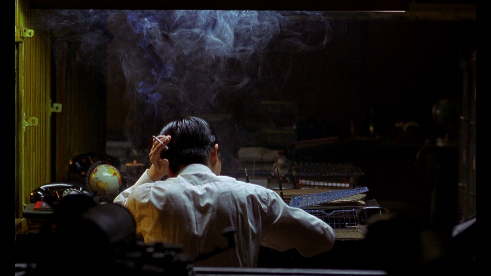 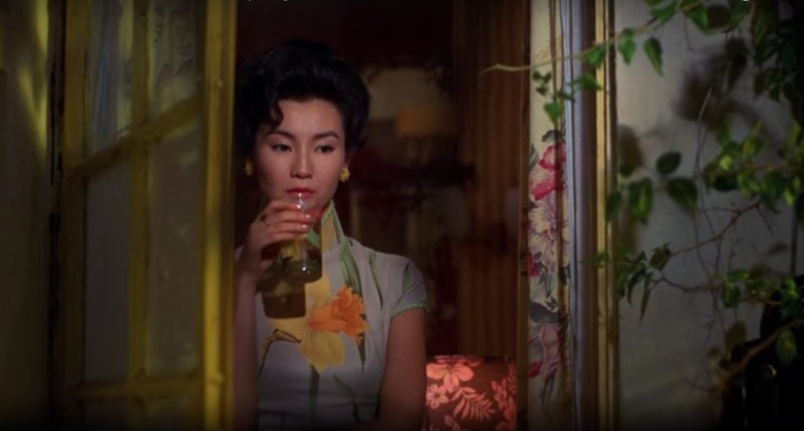 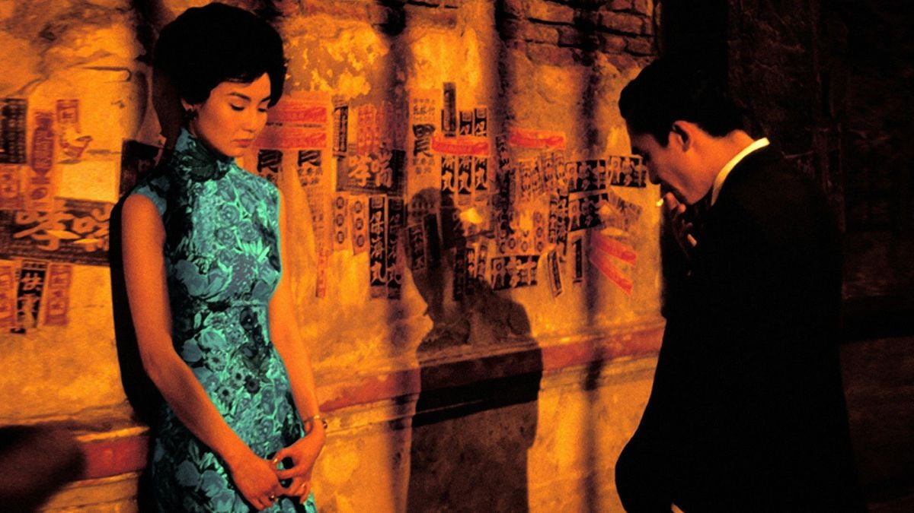 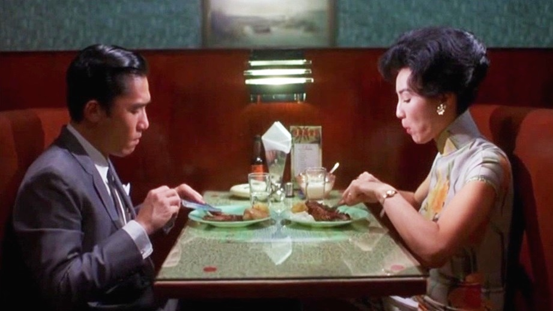One of the most searing romances of the 1990s, Wong Kar Wai’s emotionally raw, lushly stylized portrait of a relationship in breakdown casts Hong Kong superstars Tony Leung Chiu Wai and Leslie Cheung Kwok Wing as a couple traveling through Argentina and locked in a turbulent cycle of infatuation and destructive jealousy as they break up, make up, and fall apart again and again. Setting out to depict the dynamics of a queer relationship with empathy and complexity on the cusp of the 1997 handover of Hong Kong—when the country’s LGBTQ community suddenly faced an uncertain future—Wong crafts a feverish look at the life cycle of a love affair that is by turns devastating and deliriously romantic. Shot by ace cinematographer Christopher Doyle in both luminous monochrome and luscious saturated color, Happy Together is an intoxicating exploration of displacement and desire that swoons with the ache and exhilaration of love at its heart-tearing extremes.
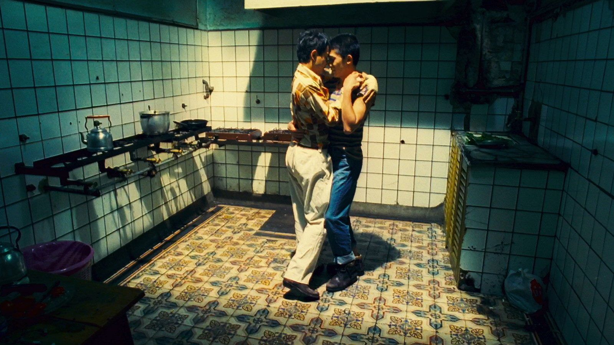 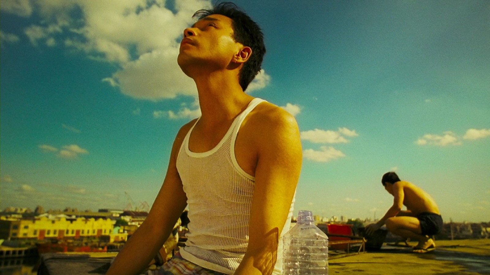 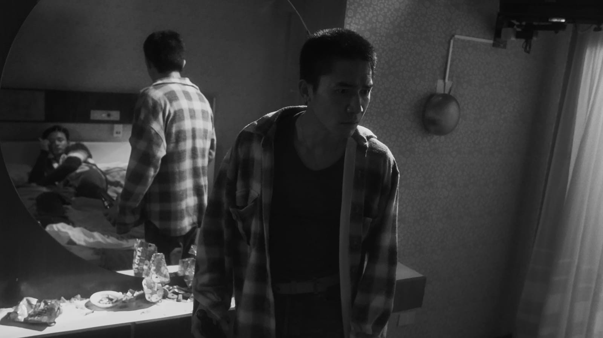 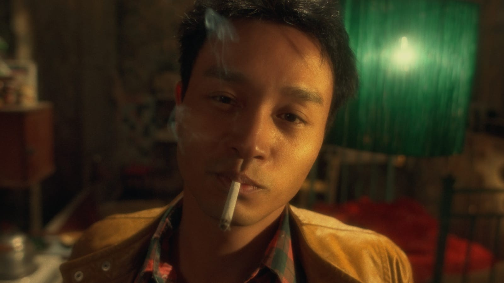The whiplash, double-pronged Chungking Express is one of the defining works of 1990s cinema and the film that made Wong Kar Wai an instant icon. Two heartsick Hong Kong cops (Takeshi Kaneshiro and Tony Leung Chiu Wai), both jilted by ex-lovers, cross paths at the Midnight Express take-out food stand, where the ethereal pixie waitress Faye (Faye Wong) works. Anything goes in Wong’s gloriously shot and utterly unexpected charmer, which cemented the sex appeal of its gorgeous stars and forever turned canned pineapple and the Mamas & the Papas’ “California Dreamin’” into tokens of romantic longing.
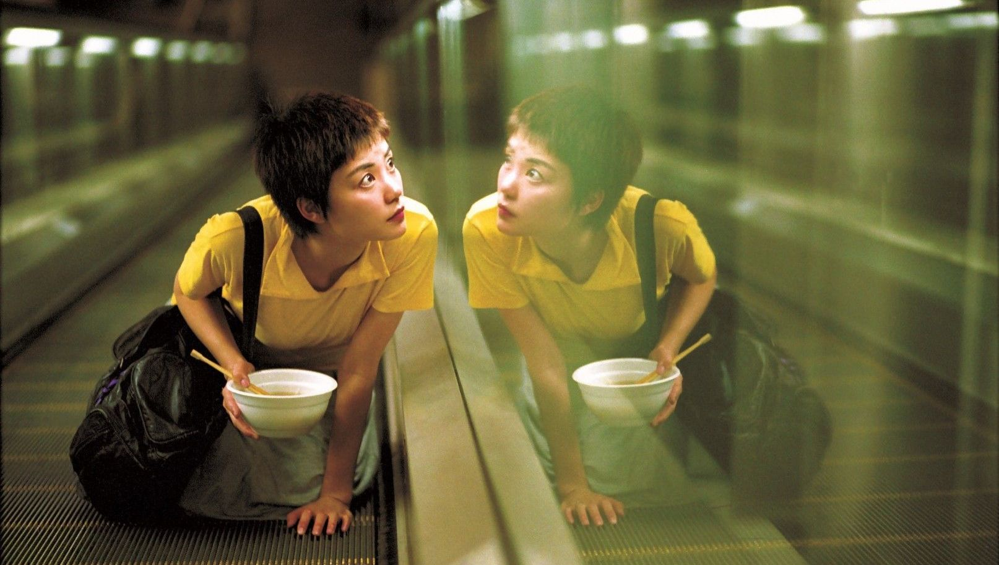 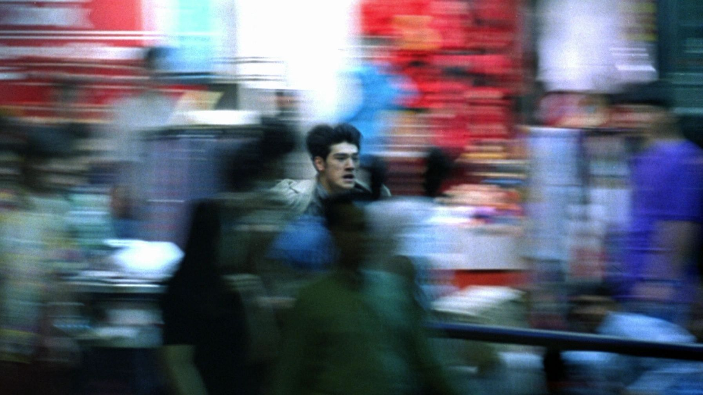 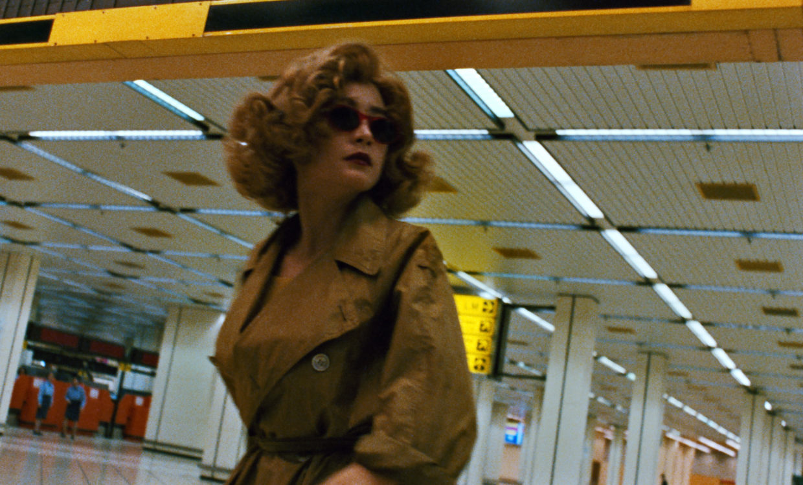 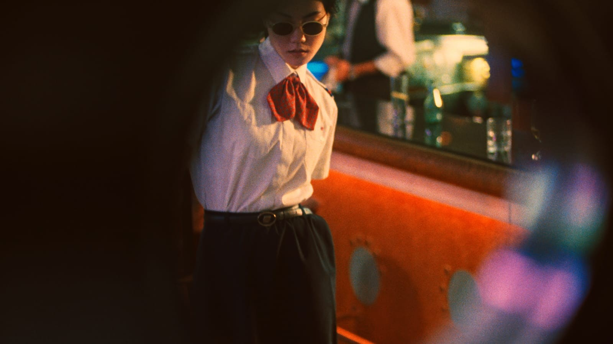The breakthrough sophomore feature by Wong Kar Wai represents the first full flowering of his swooning signature style. The initial entry in a loosely connected, ongoing cycle that includes In the Mood for Love and 2046, this ravishing existential reverie is a dreamlike drift through the Hong Kong of the 1960s in which a band of wayward twentysomethings—including a disaffected playboy (Leslie Cheung Kwok Wing) searching for his birth mother, a lovelorn woman (Maggie Cheung Man Yuk) hopelessly enamored with him, and a policeman (Andy Lau Tak Wah) caught in the middle of their turbulent relationship—pull together and push apart in a dance of frustrated desire. The director’s inaugural collaboration with both cinematographer Christopher Doyle, who lends the film its gorgeously gauzy, hallucinatory texture, and actor Tony Leung Chiu Wai, who appears briefly in a tantalizing teaser for a never-realized sequel, Days of Being Wild is an exhilarating first expression of Wong’s trademark themes of time, longing, dislocation, and the restless search for human connection.
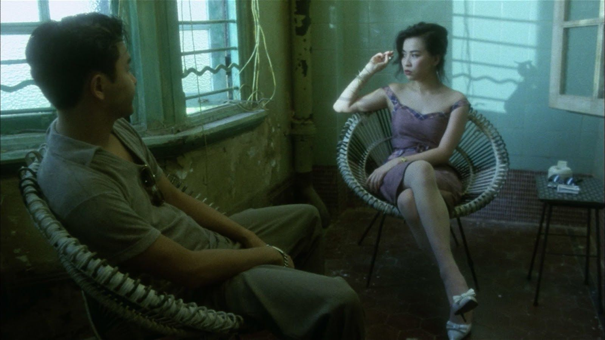 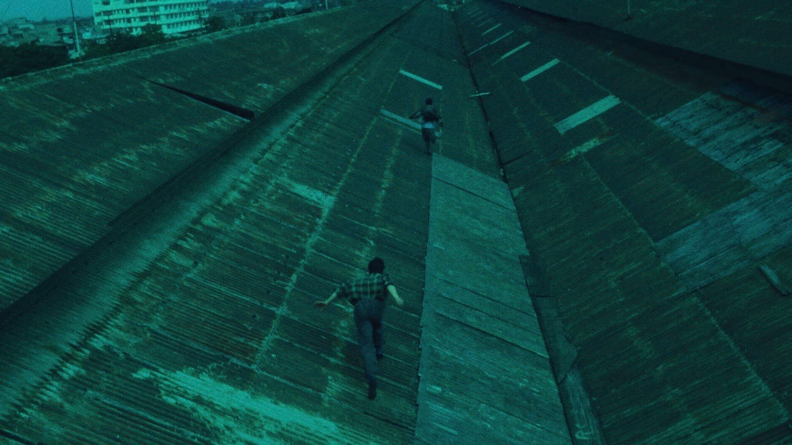
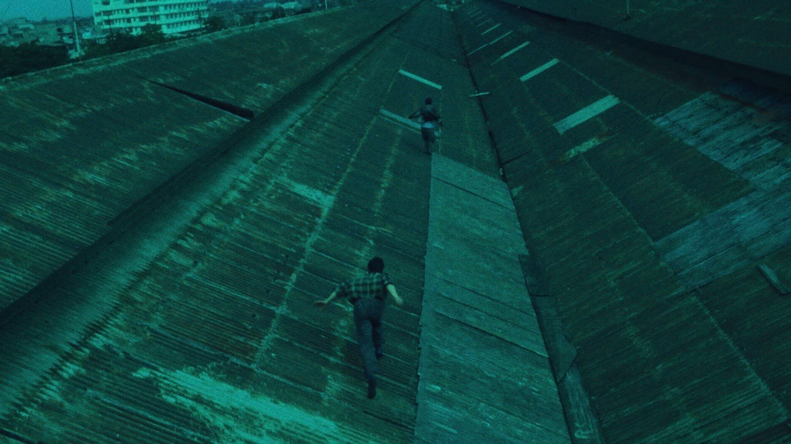